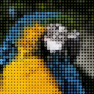

पिक्सेल टाइल

लेयर को छोटी पिक्सेल-पैटर्न टाइलों की ग्रिड से दोबारा बनाता है। हर टाइल अपने नीचे की चमक देखकर तय करती है कि अपने पैटर्न का कितना हिस्सा बनाए, कुछ-कुछ ASCII आर्ट और मोज़ेक के मेल जैसा। केऑस रैंडम टाइलों से ग्रिड को तोड़ देता है।
सेटिंग्स
| सेटिंग | प्रकार | रेंज | डिफ़ॉल्ट |
|---|---|---|---|
| पैटर्न | विकल्प | हाई डिटेल, अंक और अक्षर, क्षैतिज रेखाएँ, डॉट, ऊर्ध्वाधर रेखाएँ, ग्रंज, रिंग, सॉलिड, बाईं ओर तिरछा, दाईं ओर तिरछा | डॉट |
| टोन सोर्स | विकल्प | ल्यूमिनेंस, औसत, लाल, हरा, नीला | ल्यूमिनेंस |
| टाइल साइज़ | संख्या | 2 से 256 | 16 |
| डिटेल | संख्या | 2 से 16 | 8 |
| शेड | संख्या | 2 से 16 | 8 |
| ब्राइटनेस | संख्या | -100% से 100% | 0% |
| कंट्रास्ट | संख्या | 0% से 400% | 100% |
| फ़ोरग्राउंड | कलर | – | #FFFFFF |
| बैकग्राउंड | कलर | – | #000000 |
| असली कलर इस्तेमाल करें | चालू या बंद | – | बंद |
| पारदर्शी बैकग्राउंड | चालू या बंद | – | बंद |
| पैटर्न ऑफ़सेट | पॉइंट (X, Y) | -5000 px से 5000 px | 0 px, 0 px |
| केऑस | चालू या बंद | – | बंद |
| केऑस की मात्रा | संख्या | 0% से 100% | 25% |
| रैंडम सीड | संख्या | 0 से 9999 | 1 |
| केऑस की स्पीड | संख्या | 0 से 30 | 0 |
| रैंडम पैटर्न | चालू या बंद | – | चालू |
| पिक्सेल पलटें | चालू या बंद | – | चालू |
| टाइल उलट-पुलट करें | चालू या बंद | – | बंद |
| मिक्स | संख्या | 0% से 100% | 100% |